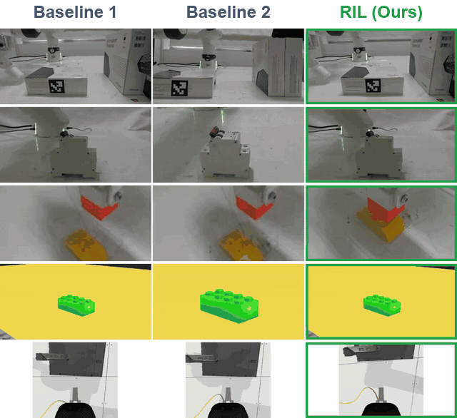
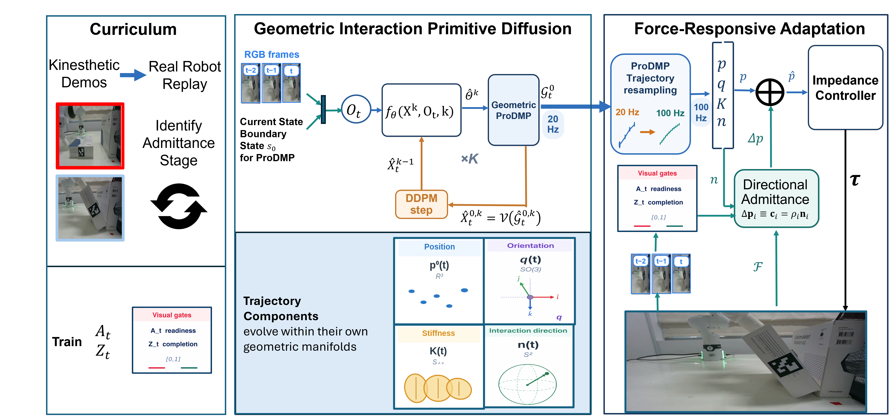
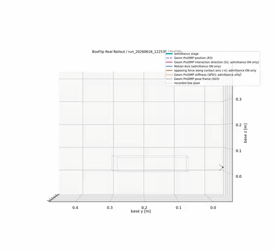
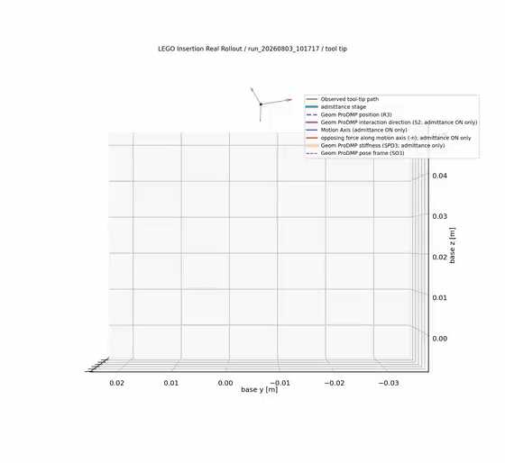
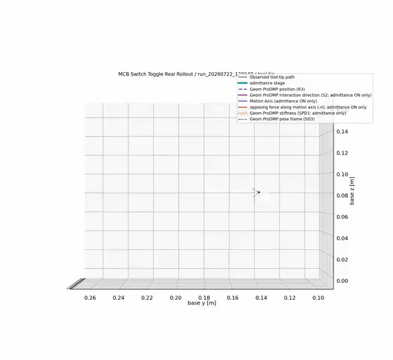

ROBOT LEARNING
Reactive Interaction Learning (RIL)
Diffusion-based contact-rich manipulation with geometric ProDMP decoding, stiffness prediction, and force-responsive directional admittance under Cartesian impedance control.

Overview
Contact-rich manipulation requires coordinated motion, compliance, and force response under uncertain contact dynamics. While vision-based policies can generate effective nominal motions, performance can degrade when contact conditions differ from those represented in the training data, leading to contact loss, stalls, or jamming. We present Reactive Interaction Learning (RIL), which augments diffusion-based trajectory generation with geometric interaction primitives, directional force adaptation, and failure-driven learning. The policy predicts position, orientation, positive-definite stiffness, and interaction direction from vision and proprioception, using geometric ProDMPs for synchronized manifold-valued motion and command continuity across replans. Predicted stiffness modulates compliance, while measured wrench generates real-time directional admittance corrections to the upsampled trajectory delivered to the controller. Correction state persists across replans without desired-force targets or wrench input to the policy. Autonomous rollouts expose failures to supervise admittance activation and refine stiffness, direction, and recovery motions. RIL is evaluated on three real-robot tasks using a Franka FR3 and two simulated tasks: the Intrinsic AI for Industry Challenge SFP cable insertion task and brick stacking in Newton with MuJoCo contact geometry. RIL achieves an improvement in success rates by 20–75 percentage points over the strongest baseline per task. Fixed-policy tests and ablations assess adaptation to changed contact conditions and component contributions.
Framework

Real-Robot Primitives


